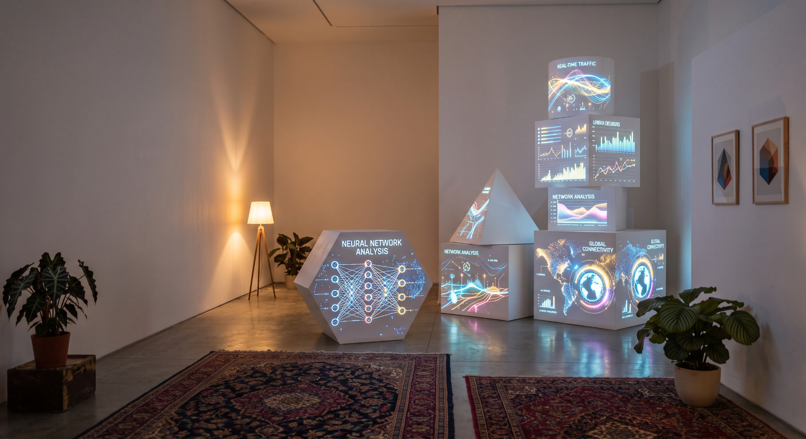

Studio 3D & Node Graph Temps Réel
Le moteur de vidéo-mapping 3D, de scénographie numérique et de dataviz réactive propulsé par Tauri 2, React 18 et Three.js r170.

Moteur DAG 100% Réactif
Un flux de données unifié où la moindre modification de node réévalue l'intégralité du rendu 3D à 60 FPS sans boucle infinie.
Calibration DLT Directe
Alignez votre vidéo-projection sur les coins physiques d'une pièce grâce au solveur DLT temps réel calculant la pose et le lens shift.
Timeline & Keyframing Granulaire
Enregistrez des clés d'animation paramètre par paramètre ou axe par axe (k), avec priorité absolue des câbles sur l'interpolation.
Catalogue Complet des Nodes Tsuji
Explorez les 60+ nodes spécialisées avec leurs types de prises, paramètres par défaut et exemples d'utilisation.
Calibration Vidéo-Mapping 3D (Direct Linear Transformation)
Ajustez virtuellement le projecteur physique à l'écran et visualisez la résolution DLT en direct.
Guides & Tutoriels Pédagogiques
Des instructions pas-à-pas claires, structurées et accompagnées de visuels réels de l'application.
Raccourcis Clavier & Commandes Rapides
Augmentez votre productivité en maîtrisant les raccourcis clés de Tsuji.
Centre de Diagnostic & Résolution de Problèmes
Un assistant interactif pour résoudre rapidement les erreurs fréquentes d'animation, de calibration et d'audio.